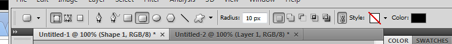

Image Editing and Visual Effect using Photoshop
Current web pages require graphical image for user friendliness. In this section, we explain how to create, position, effectively show the images in web pages using Adobe Photoshop.
Type of Image Source
As described in "digitalization of images and movies" of Information Expression in Computer (2) (Sub-textbook), computer graphics are classified into a bitmap (raster) graphic image and a vector graphic image. Vector images are appropriate as an image source.
Finding Image Source
As described in Using HTML Templates, you would find and get online free templates. If you do not have confidence to create image design by yourself, the templates are a good option.
You can find vector image sources on the web site; "free vector", or you can google with some key words you want. For example, 60 Free Vector Icon Packs for Design Professionals can be found with "free vector icons".
Notice that check the license of the image sources before you use. Depending on the license, you cannot edit the images. It is a good choice to find images licensed Createve Commons. Using google's licence search option is another good choice.
Creating Rollover Effects for Hyper-link Images
When you use images for hyper-links, unlike the text hyper-links, there are no common expressions that the image can be clicked or not. With rollover effects, the image is replaced to another image with slightly different color. This effect let users know whether the image is clickable or not.
Exapmle: No Rollover (Point mouse cursor on the image)

Exapmle: With Rollover (Point mouse cursor on the image)
How to Create Button Images
In this tutorial, we create button images from scratch. Let's create inquiry button used above. (You can also find lots of tutorials online. Please google with keywords like "Photoshop button" etc.)
First, draw a rectangle using " Rounded Rectangle Tool". You can change the background color with "Color:" in menu bar, as shown in Fig. Color.
Fig. Rounded Rectangle Tool

Fig. Color
Please right-click on the layer you created, and select "Blending Options". A new window pops up as show in "Fig. Menu of Blending Options". Please change the settings in the window, and you would see that visual effects of the layer change.
Fig. Right Click on Layer
Fig. Menu of Blending Options
In this tutorial, the stroke size is set to 1px as show in Fig. Stroke, and background is colorized with a gradient option as show in Fig. Gradient Overlay.
Fig. Stroke.
Fig. Gradient Overlay.
Now, you can see a box with gradient as shown in Fig. Gradient Box.
Fig. Gradient Box
Then, let's type text using Horizontal Type Tool.
Lastly, let's copy and paste an icon image.

In this tutorial, we give a 3D appearance to the icon by adding drop shadow effect.
Fig. Without drop shadow
Fig. With drop shadow
Lastly, let's cutout the image you have created, since the size of image is arbitrary. To cutout the image, you can use "Slice Select Tool", and select the image you want to save. Probably, the edge of the image needs to be adjusted. If you need to adjust the edge, zoom the image more than 1000%, then adjust correctly .


After you adjusted, select "Save for Web & Devices" from a File menu. When the image is devided using Slice Tool, you can save each devided part to each file. In the Fig. Save for Web & Devices, 03 is what you need. So, select the 03 part, and click "save". Then you get the image you created.

Fig. Save for Web & Devices
How to Create Rollover Image
Using the image you created, let's create the image for rollover. On photoshop, open "Layer Style" again, and choose "Color Overlay". Then set the opacity to arbitrary value. In the figure, it is set to 30%. It makes the image tint. This is the image for rollover. Please save the image!
Fig. With Color Overlay
Fig. Without Color Overlay
You can download the PSD file from here.
How to Rollover (CSS)
Preparing images is finished. Let's write a code for rollover. To realize rollover, you have two choices; using CSS's hover pseudo class, and JavaScript. In this tutorial, we introduce hover pseudo class.
At first, prepare HTML as follows.
HTML
Then, prepare CSS as follows.
CSS
#otoiawase-rollover a {
display: block;
width: 202px;
height: 52px;
background: url(../images/toiawase_off.jpg);
text-decoration: none;
text-indent: -1000em;
}
#otoiawase-rollover a:hover {
background: url(../images/toiawase_on.jpg);
}
In this CSS, two set of CSS statements are described. The first statement is for A tag, and the second is for A:hover tag. "hover" is a pseudo class, which means "a condition that mouse is over the element".
Note that the width and height value should be changed to your image size. In addition, the text-indent attribute is set to negative. This avoids to overlay the text in A tag.
Excercise
- Make rollover images, and write CSS, and HTML in this tutorial.
- Comment out text-indent attribute in the CSS, and see the appearance.
- Make text color changed when mouse is over using hover pseudo class.
- Make a banner for your homepage using Photoshop. Search image samples on the Internet. You can use arbitrary resourecs.
Summary
In this tutorial, we introduced how to make images for web pages using Photoshop. Hover pseudo class enables to make rollover effect.